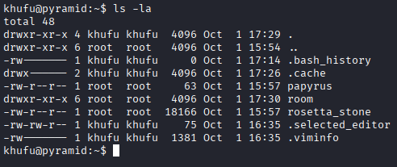
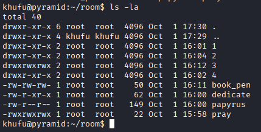
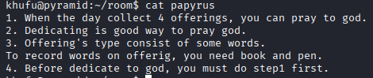
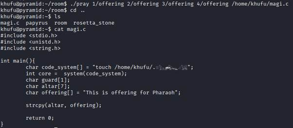
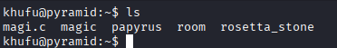
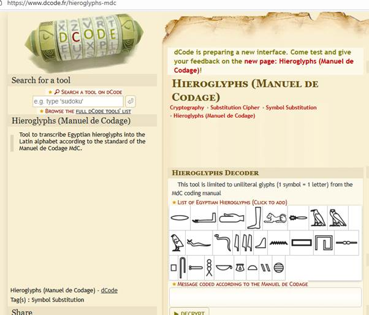
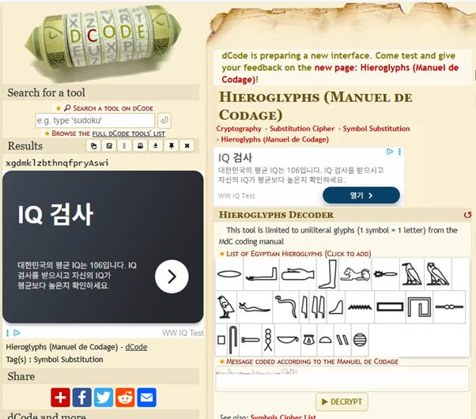
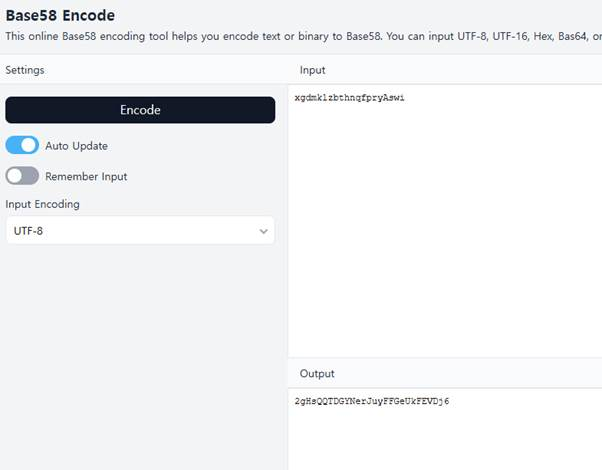
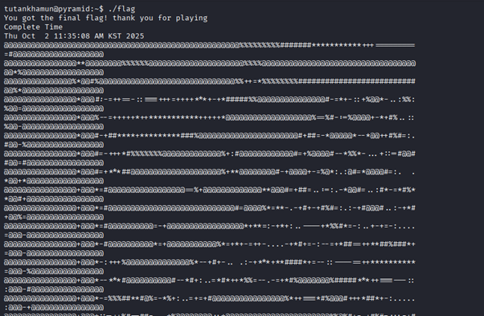

Pyramid 4단계 Walk-Through
1. 3단계에서 마지막 과정을 통해 비밀번호를 얻었다면 SSH 접속을 시도합니다.

ð SSH 접속에 사용된 계정 정보
n Username: khufu
n Password: 747574616e6b68616d756e
2. “ls -la”를 통하여 디렉터리 구조를 살핍니다.

ð ‘papyrus’, ‘/room’, ‘rosetta_stone’ 이라는 파일과 디렉터리가 각각 보입니다.
3. Cat 명령어를 통하여 papyrus의 내용을 살펴봅니다.

ð “우리는 마침내 피라미드를 찾았다”, “우리는 여기에 마법이 필요하다”랍니다.
4. /home/khufu/room directory의 구조를 살핍니다.

ð
여러
파일과 하위 디렉터리가 확인됩니다,
하나씩 구조를 살펴봅시다.
5. Directory /1, /2, /3, 4


ð 각 directory에는 ‘offering’이라는 공통된 이름의 파일이 있었고 그 안에는 여러 파트로 분해된 것 같은 코드가 비춰졌습니다. 코드의 구조로 보아 ‘C언어’ 코드일 확률이 매우 높습니다.
ð /1, /2, /4 directory에는 ‘offering’ 파일이 존재하였지만 /3 공간에만 아무 것도 비춰지지 않았습니다.
6. 다시 단서 찾기.

è /home/khufu/room/에 위치하는 ‘papyrus’(/home/khufu/papyrus 와는 다른 파일)을 읽어봅니다.
ð 4개의 제물(offering)이 모이는 날 신에게 소원(pray)을 빌 수 있을 것이라고 말합니다.
ð 제물이라면 방금 /1~/4 directory 아래에 존재하던 ‘offering’이라는 파일을 말하는 것 같습니다.
ð /3 에서만 ‘offering’이 존재하지 않았기 때문에 이 점을 생각해봅니다.
ð ‘/home/khufu/room/papyrus’에서 2번에 Dedicating(봉헌)은 신에게 pray하기 가장 좋은 방법이라고 말했는데 /home/khufu/room/dedicate 라는 파일이 존재하는 것을 우린 확인했습니다. 또한 3번에 Offering은 단어들로 구성 되어 있고 이를 작성하기 위해선 book과 pen이 필요하다고 말합니다.
7. 기존 Offering 코드 조합해보기
#include <stdio.h>
#include <unistd.h>
#include <string.h>
int main(){
char code[] = "touch /home/khufu/.𓎼𓅱𓃭𓂧𓅂𓈖_𓈎𓅂𓇌"
int core = system(code);
char guard[1];
char altar[7];//2
strcpy(altar, offering);
return 0;
}
ð room/1, room/2, room/4 의 offering들을 조합하면 이런 하나의 C언어 코드가 나오는데 이 코드를 분석했을 때 strcpy 함수에 altar 변수에 옮겨 담을 ‘offering’ 변수가 존재하지 않는 것을 확인할 수 있고 이 과정에서 어떠한 ‘입력 검증’도 존재하지 않는다는 것을 확인할 수 있습니다. C언어에서 코드를 작성할 때 이러한 입력 값 검증 누락은 BoF 취약점을 발생시킬 수 있는 가장 대표적인 취약한 코드 설계로 우리는 이 점을 이용해 altar에 정적으로 할당된 값보다 더 큰 값을 offering 변수에 할당하고 이를 /home/khufu/room/book_pen 파일을 통해 기입해보겠습니다.
8. /home/khufu/room/book_pen

ð offering 변수에 확실하게 주변 주소 값을 침범 할 수 있는 크기의 값을 할당해줍니다.(위 사진의 값은 예시입니다)
9. /home/khufu/room/dedicate

ð ‘dedicate’ 파일을 실행시킨 후 room/3/을 확인해보니 ‘offering’이 생겨났고 내용을 확인하니 우리가 ‘book_pen’에 기입했던 값이 그대로 들어갔습니다.
ð 이제 /home/khufu/room/papyrus 내용에 따라 offering 4개가 다 모였으니 pray 파일을 실행해봅시다.
10. /home/khufu/room/pray

ð ‘pray’를 실행시키니 5번째 변수가 redirect를 시도하기 애매하다는 것을 보니 적용되는 변수는 최소 5개 이상이고 이와 지금까지 얻은 정보를 바탕으로 추론을 하면 변수 5개 중 4개는 우리가 찾았던 room/n/offering 파일 4개이고 나머지 하나는 redirect 시킬 파일인 것 같습니다.
ð linux에서는 “cat file1 file2 >> file3”과 같은 명령어 형식으로 file1과 file2의 내용을 합친 file3이라는 파일을 만들 수 있고 이 pray 파일은 각 offering의 파일들의 분할된 c코드를 하나의 코드로 합쳐주는 기능을 하는 것을 추측할 수 있고 c언어 파일인 ‘.c’ 확장자로 파일을 정해야 할 것입니다.
ð ‘/home/khufu/papyrus’ 파일의 구문을 상기시켜봅시다.

è ‘magi…c’이 필요하답니다.
è ‘magi’라는 이름을 가진 ‘.c’파일을 만들어보면 어떨까요.

ð ‘pray’ 명령어는 성공적으로 실행됐고 magi.c를 생성한 곳으로 가서 파일을 확인해보니 정말 offering 파일 4개가 하나로 합쳐진 c코드가 완성됐습니다.
11. /home/khufu/magic

ð 이 파일을 다시 상기시켜보면 맨 마지막 줄에 magic은 1분마다 일어난다고 되어있습니다.
ð 실제로 우리는 /home/khufu/ 에는 ‘papyrus’, ‘room’, ‘rosetta_stone”이 3개의 파일 및 디렉터리와 방금 우리가 생성해낸 ‘magi.c’ 하나만이 존재했습니다.

è 하지만 다시 /home/khufu/ 를 확인해보면 ‘magic’이라는 존재하지 않던 파일을 확인할 수 있고 1분마다 magi.c가 존재한다면 magic이라는 파일이 생기는 것을 확인할 수 있습니다.

è ‘magic’ 파일을 실행하니 “ .𓎼𓅱𓃭𓂧𓅂𓈖_𓈎𓅂𓇌 “ 라는 알 수 없는 숨겨진 파일이 나왔습니다, 읽을 수 있는 파일이니 읽어봅시다 ( 파일 읽기를 시도할 때 저 파일의 이름을 직접 타이핑하기 어려우니 복사 붙여넣기를 통해 시도합니다. )

è “𓐍𓎼𓂧𓅓𓎡𓃭𓊃𓃀𓏏𓉔𓈖𓈎𓆑𓊪𓂋𓇌𓄿𓋴𓅱𓇋 => (...) => 58”라는 결과 값이 나왔고 이제 저 힌트를 활용해봅시다.
12. Decoding&Encoding

ð 계속 글에 등장하는 저 상형문자는 ‘Hieroglphs’라는 명칭을 가지고 있으며 ‘ancient Egyptian words’ 같은 이름으로 검색을하여도 인터넷에서 많은 정보를 찾을 수 있습니다, 역시 이 문자를 디코딩해주는 사이트도 존재하고 이를 이용해 한 번 디코딩해봅시다.

ð 디코딩 시 “xgdmklzbthnqfpryAswi”라는 문자열이 나옵니다, 하지만 " 𓐍𓎼𓂧𓅓𓎡𓃭𓊃𓃀𓏏𓉔𓈖𓈎𓆑𓊪𓂋𓇌𓄿𓋴𓅱𓇋 => (...) => 58 "라는 결과에서 과정이 하나가 더 있었고 “(…) => 58”이라는 과정을 보아 base58로 encoding을 시도해봅시다.

ð “2gHsQQTDGYNerJuyFFGeUkFEVDj6”라는 결과 값이 나왔고 이를 ‘tutankhamun’ 계정에 접속 시도해봅시다.
13. Final flag

ð Tutankhamun 계정에 성공적으로 접속했고 root directory로 이동하니 ‘flag’를 발견할 수 있었습니다.

ð Flag 발견 끝.